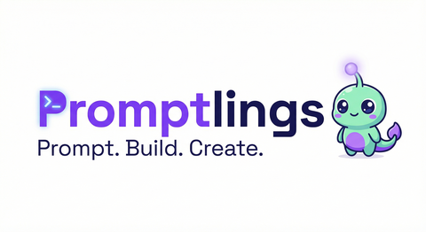
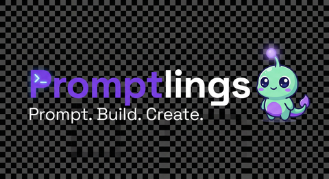
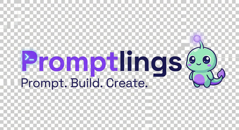

Logo 1 — Clean & Professional (Primary)
Tier 2 — wordmark + icon. For nav, footer, partnerships, press kits.
On Light Background

Nav Size — 480×262 PNG (105KB) / WebP (7KB)
Medium — 800×437 PNG (301KB) / WebP (13KB)
Dark Mode Variant (white text for dark backgrounds)

Dark Mode Nav — "lings" + tagline in white
Dark Mode Medium
Transparent Background

Transparent Nav (on dark)
Transparent Nav (on light)